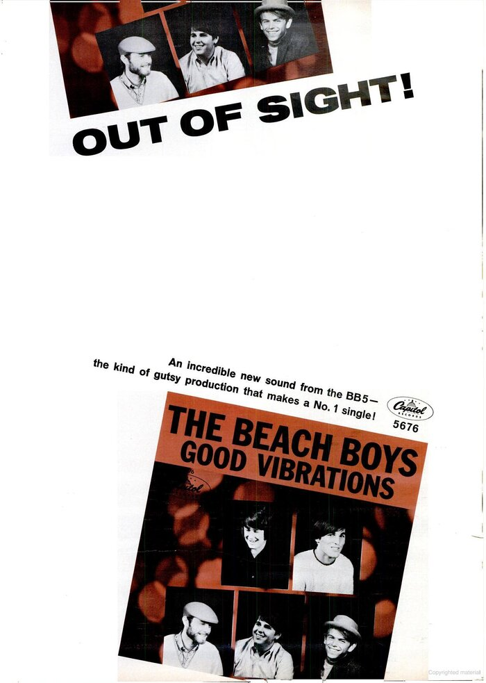

Good Vibrations by The Beach Boys turned a childhood story about unseen vibrations into a pop landmark.
Brian Wilson spent seven months and four studios building it piece by piece.
The result became the band's biggest hit.

Table of Contents
- Writing Good Vibrations from a Childhood Story
- Recording the Pocket Symphony
- Chart Success and Lasting Legacy
- FAQ
Writing Good Vibrations from a Childhood Story
Brian Wilson's mother, Audree, used to tell him that dogs bark at some people and not others.
She said they were picking up on unseen vibrations.
The idea unsettled him as a kid, then stuck with him for years.
Early in 1966, while finishing the "Pet Sounds" album, he started shaping it into a song.
Mike Love Writes the Chorus
Mike Love finished the job in the back seat of a car on the way to a session.
He called it "basically a flowery poem" built around peace, love and a good feeling.
That chorus, "I'm pickin' up good vibrations," carried the whole track's mood in a single line.
A 1994 lawsuit later awarded Love composer credit on this song.
He shared credit on dozens of others he had written with Wilson.
Recording the Pocket Symphony
Wilson called the finished record a "pocket symphony," and the recording process matched that ambition.
Sessions ran from February to September 1966, using tracks cut in four different Hollywood studios.
Rather than record the song straight through, Wilson built it from short fragments.
He taped each section separately, then spliced the best takes together.
Contemporary estimates put the cost near $50,000, an enormous sum at the time.
Session players known as the Wrecking Crew handled the instruments.
The Beach Boys themselves mostly stuck to vocals.
The Electro-Theremin Sound
The song's wailing signature line came from an Electro-Theremin.
Former Glenn Miller trombonist Paul Tanner built the instrument with engineer Bob Whitsell.
Unlike a true theremin, it used a slide and fingerboard instead of antennas.
That made it easier to play in tune.
For live shows, the band switched to a similar device called the tannerin.
Tom Polk built it with a ribbon controller.
Who Played on the Track
- Carl Wilson, lead vocal on the verses
- Mike Love, lead vocal on the chorus
- Brian Wilson, harmony vocal and production
- Paul Tanner, Electro-Theremin
- Hal Blaine, drums
- Carol Kaye, bass guitar
- Glen Campbell, guitar
Chart Success and Lasting Legacy
Capitol released the single on October 10, 1966.
It reached number one on the Billboard Hot 100 in December 1966.
It became the band's first million-selling single.
The song was not tied to an album at release and later appeared on 1967's "Smiley Smile."
It stayed The Beach Boys' last U.S. number one until "Kokomo" reached the top 22 years later.
| Country / body | Chart or award | Result |
|---|---|---|
| United States | Billboard Hot 100 | No. 1 |
| United Kingdom | UK Singles Chart | No. 1 |
| France | National chart | No. 1 |
| Canada | National chart | No. 2 |
| Australia | National chart | No. 2 |
| United States | RIAA certification | Triple Platinum |
| United Kingdom | BPI certification | Silver |
Awards and Recognition
The single earned four Grammy nominations.
It lost Best Contemporary R&R Song to "Winchester Cathedral."
NME readers voted The Beach Boys the world's top band that year, ahead of The Beatles.
The production techniques pioneered here fed directly into the psychedelic rock experimentation that followed across the late 1960s.
Three years earlier, the band scored their breakthrough with the far simpler "Surfin' USA."
The gap shows how fast their sound evolved.
FAQ
What is the meaning of Good Vibrations?
Brian Wilson built the idea around his mother's stories that dogs pick up on unseen vibrations from people.
Mike Love turned that concept into a love song about sensing something good in another person.
How long did it take to record Good Vibrations?
Wilson worked on the track from February to September 1966, across four different Hollywood studios.
Who played the eerie instrument on Good Vibrations?
Session musician Paul Tanner played an Electro-Theremin.
He built the fingerboard-controlled device with engineer Bob Whitsell, and it made the song's wailing signature sound.
Did Good Vibrations reach number one?
Yes, it topped the Billboard Hot 100 in the United States on December 10, 1966.
It also reached number one in the United Kingdom and France.
What album is Good Vibrations on?
It was released as a standalone single ahead of any album.
It was later added to 1967's "Smiley Smile," the record the band built after shelving the unfinished "Smile" project.
A pocket symphony built from tape splices and a homemade theremin still sounds unlike anything else from 1966.
Read more about the band's full catalog on the The Beach Boys biography page.
Explore the wider scene on the Garage & Surf Rock genre hub.
Wikipedia's entry on the song covers its full production history in more depth.
Six decades on, Good Vibrations by The Beach Boys remains the high-water mark of 1960s studio pop.
Back to the 1960smusic.net homepage to explore every genre of the decade.